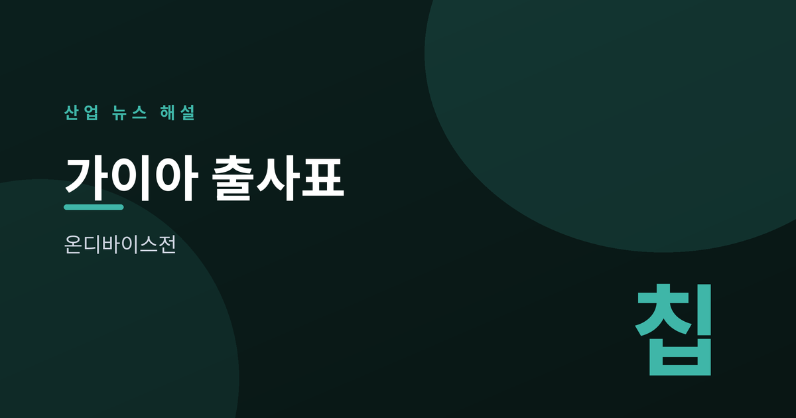
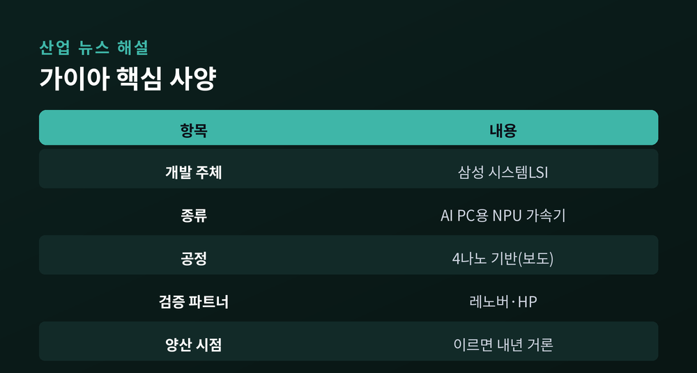
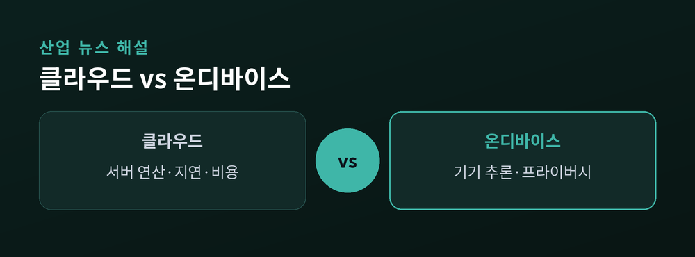
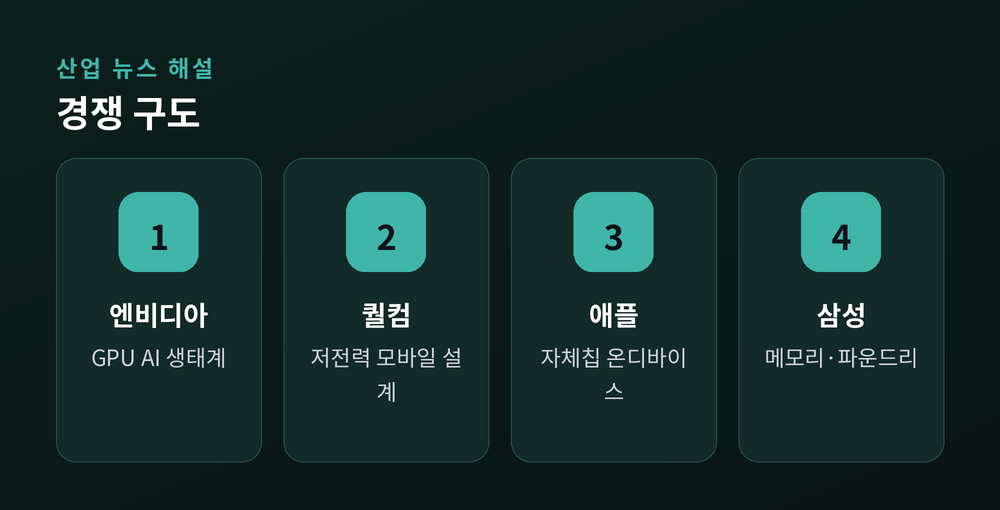
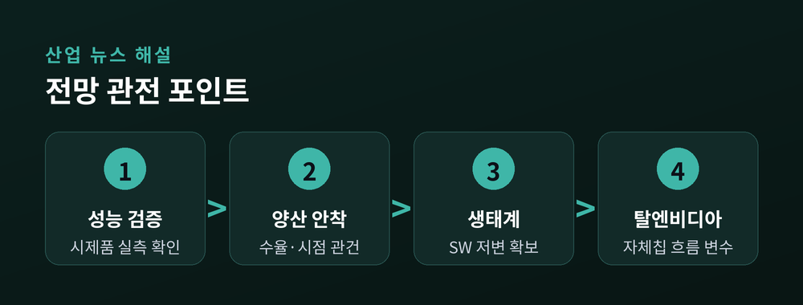

온디바이스 AI 격전지 열린다

삼성전자가 AI PC용 반도체 시장에 출사표를 던졌습니다.
'가이아(GAIA)'라는 이름의 AI 가속기가 개발 중이라고 보도됐습니다.
그동안 AI 반도체의 무대는 거대한 데이터센터였습니다.
그런데 이번엔 우리 책상 위 PC가 새 격전지로 떠오르고 있습니다.
낯선 이름의 칩 하나가 왜 이렇게 주목받는지, 차분히 짚어보겠습니다.
2026년 7월 초, 삼성전자가 AI PC용 가속기 '가이아'를 개발 중이라고 전해졌습니다.
한국경제 등 국내 매체가 시스템LSI사업부의 개발 소식을 잇따라 보도했습니다.
가이아는 PC 안에서 생성형 AI 연산을 처리하도록 설계된 칩으로 알려졌습니다.
범용 프로세서와 달리 AI 추론에 특화된 구조라는 설명입니다.
신경망처리장치, 즉 NPU를 최적화해 연산 효율을 높였다고 전해집니다.
4나노 공정 기반이며, 레노버·HP 등에 시제품을 공급해 성능 검증 중이라고 합니다.
십수 년 만에 삼성이 PC용 칩 시장에 본격 복귀하는 신호로 읽는 시각도 있습니다.
메모리에 강한 삼성이 연산 칩까지 직접 만든다는 점에서 의미가 작지 않습니다.
이르면 내년 양산 가능성이 거론되지만, 아직 확정된 단계는 아닙니다.
보도 기반인 만큼, 구체적 사양과 일정은 앞으로 교차 확인이 필요합니다.

핵심은 '기기 안에서 직접 추론한다'는 점입니다.
지금까지 AI 연산은 대부분 멀리 있는 클라우드 서버에서 이뤄졌습니다.
반면 온디바이스 AI는 PC 안에서 바로 계산을 끝냅니다.
멀리 데이터를 주고받지 않으니 응답 지연이 눈에 띄게 줄어듭니다.
사진이나 문서 같은 개인 데이터가 기기 밖으로 나가지 않아 프라이버시에도 유리합니다.
쓸 때마다 나가던 클라우드 사용료 부담을 덜 수 있다는 점도 무시하기 어렵습니다.
그래서 AI 에이전트 시대가 열리면, PC가 이를 가장 먼저 구현할 플랫폼으로 꼽힙니다.
비서 같은 AI가 내 기기 안에서 늘 대기하는 그림을 떠올리면 이해가 쉽습니다.
가이아가 겨냥하는 지점도 바로 이 '기기 위의 AI' 흐름입니다.
연산을 메모리 가까이 두어 데이터 이동에서 생기는 지연과 전력 소모를 줄이는 방식으로 알려졌습니다.

AI PC 시장에는 이미 강자들이 들어와 있습니다.
엔비디아는 GPU 기반 AI 생태계를 앞세워 PC용 칩까지 영역을 넓히고 있습니다.
퀄컴은 저전력 모바일 설계 역량으로 '스냅드래곤 X' 계열을 밀고 있습니다.
애플은 자체 실리콘으로 온디바이스 AI를 일찌감치 구현해 왔습니다.
화웨이 등도 온디바이스 가속기 시장에 가세한 것으로 전해집니다.
저마다 자기가 잘하는 무기를 들고 링에 올라선 셈입니다.
그렇다면 후발주자인 삼성의 무기는 무엇일까요.
바로 메모리와 파운드리, 즉 직접 만들고 붙이는 수직 역량입니다.
칩과 메모리를 한 지붕 아래서 함께 최적화할 수 있다는 점이 강점으로 꼽힙니다.
데이터를 메모리 안에서 처리하는 기술과 묶을 여지도 거론됩니다.

업계에선 AI PC를 데이터센터에 이은 차세대 격전지로 봅니다.
삼성이 메모리 근처에서 연산하는 구조를 노린다면, 강점이 뚜렷합니다.
다만 아직은 보도 기반이라, 성능과 양산 시점은 지켜봐야 합니다.

강점은 분명하나, 검증과 생태계 확보가 성패를 가릅니다.
이미 자리 잡은 경쟁사들의 소프트웨어 생태계는 만만치 않은 벽입니다.
칩이 아무리 좋아도, 그 위에서 돌아갈 앱과 개발자 저변이 없으면 힘을 못 씁니다.
성능 검증과 안정적인 양산 수율을 함께 증명해야 한다는 과제도 남습니다.
여기에 구글·아마존·오픈AI 등 빅테크가 자체 칩으로 향하는 '탈엔비디아' 흐름도 변수입니다.
경쟁의 축이 하나가 아니라 여러 갈래로 동시에 벌어지고 있다는 뜻입니다.
출사표는 던져졌지만, 진짜 검증대는 오히려 지금부터입니다.
화려한 사양 숫자보다, 가이아가 어떤 실측 성능으로 답할지가 진짜 관전 포인트입니다.
(참고 출처: 한국경제, 전자신문, KED Global 등)